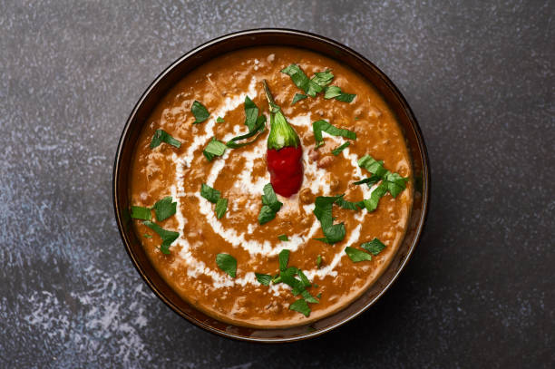

Daal-makhni

Daal makhni is again one of the very famous dishes of North India which is popular all around the globe. It is light, easy to make and a lip-smacking Indian dish made with lentils cooked in butter and spices. It is generally served with roti or naan.
Ingredients:
- 2 Cups sabut urad dal
- 8 cups water
- 2 tbsp salt
- 1 tbsp ginger, sliced
- 2 tbsp butter
- 1 tbsp oil
- 2 tbsp shahi jeera
- 1 tsp kasoori meethi
- 2 cups tomato puree
- 1 tsp chilli powder
- 1 tsp sugar
- 1/2 cups cream
- for garnishing green chillies(slit lengthwise)
How to make Daal-makhni:
- To the dal, add water, 1 Tbsp salt and ginger. Cook until dal becomes tender.
- In a heavy based pan, heat butter and oil. Add shahi jeera and kasoori methi. When they begin to splutter, add tomato puree, remaining salt, chilli powder and sugar.
- Stir-fry over high flame, till the oil separates.
- Add cooked dal and bring to boil. The consistency should be such that the dal should move around freely when stirred, otherwise add a little water.
- Leave to simmer, uncovered, till well blended. Stir-in cream and once it gets heated through, serve immediately, garnished with green chillies
Back to top
Home